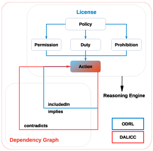

Static mirror of https://dalicc.net/ns, vocabulary version 2, generated on 2026-09-24; the live pages may be newer.
DALICC vocabulary
DALICC stands for Data Licenses Clearance Center. It is a software framework that helps application developers, legal experts and sales managers reuse third party digital sources, such as data, content or software. It does not replace legal advice.
Modern IT applications retrieve, store and process data from many sources. That raises two questions: do the licenses involved fit together, and does the result comply with existing law? Rights clearance matters most when a derivative work is compiled from several data sources, and clearing and negotiating those rights by hand is slow, complex and error-prone. A machine can only do it when the license is readable by a machine. This page documents the vocabulary that makes it so.
This page supersedes the DALICC vocabulary documentation published at dalicc.github.io (last updated in March 2022). Every definition from that document is kept here word for word as the 2022 wording of its term, beside a definition that describes the term in one plain sentence, and the terms it did not cover have been added. 145 terms are documented here. Each one says how much of the 581-license library actually uses it.
The DALICC information model

The model has two components.
The policy. The first component follows the ODRL information model to express the permissions, duties and prohibitions a license states. It draws on ODRL, on CCRel and on the DALICC extensions documented below, and describes a license for machine processing in a legally valid manner. A license is therefore a policy that classifies specific actions as permissions, duties or prohibitions.
The dependency graph. The second component expresses the valid relationships between the actions a license can name. It currently uses three basic relationships, "included in", "implies" and "contradicts", plus "same as" for terms that two vocabularies both define. The graph is what lets DALICC check a license against itself and find the conflicts between two or more licenses. Browse the dependency graph.
The namespace
Every term below is identified by a fragment IRI in https://dalicc.net/ns#, so
https://dalicc.net/ns#promote is the term and
https://dalicc.net/ns#promote is this page's anchor for it. Each term also
answers under https://dalicc.net/ns/promote, which redirects here or returns
the term's own triples, depending on what you ask for.
Two spellings exist. The 2022 documentation used the plain-HTTP form
http://dalicc.net/ns#. That form is recorded as
owl:priorVersion and still occurs in a few dependency-graph axioms in the
production triple store. It denotes the same terms, but
https://dalicc.net/ns# is canonical and the only form to use in new data.
Request this page with Accept: text/turtle, application/rdf+xml or
application/ld+json to get the machine-readable vocabulary instead, or download
it directly: Turtle,
RDF/XML, JSON-LD.
Actions
Acts on the licensed work that a license grants as an odrl:Permission or forbids as an odrl:Prohibition.
- dalicc:addLimitation
- dalicc:addStatement
- dalicc:applyTechnicalProtectionMeasures
- dalicc:attachoffer
- dalicc:ChangeLicense
- dalicc:chargeDistributionFee
- dalicc:chargeLicenseFee
- dalicc:chargeOffer
- dalicc:conditionalAddLimitation
- dalicc:covenantNotToSue
- dalicc:databaseRightWaiver
- dalicc:exceptedCombination
- dalicc:exemptedMaterial
- dalicc:suiGenerisDatabaseRights
- dalicc:ModifiedWorks
- dalicc:moralRightsNonAssertion
- dalicc:moralRightsRestriction
- dalicc:networkUseTrigger
- dalicc:patentGrant
- dalicc:patentRetaliationTermination
- dalicc:promote
- dalicc:publicationNonObstruction
- dalicc:publish
- dalicc:redistribute
- dalicc:reverseEngineerForInteroperability
- dalicc:royaltyCollectionReserved
- dalicc:sellCopy
- dalicc:sublicense
- dalicc:textAndDataMining
- dalicc:useForModelTraining
Add limitation dalicc:RuleActionodrl:Actionowl:NamedIndividualskos:Concept
https://dalicc.net/ns#addLimitation
Adding further limitations or restrictions to the license terms when passing the work on.
Add statement dalicc:DutyActiondalicc:RuleActionodrl:Actionowl:NamedIndividualskos:Concept
https://dalicc.net/ns#addStatement
Attaching terms, notices or statements of one's own to the work or to one's modifications when passing it on.
Apply technical protection measures dalicc:RuleActionodrl:Actionowl:NamedIndividualskos:Concept
https://dalicc.net/ns#applyTechnicalProtectionMeasures
Applying technological measures that control access to the work or its use.
Added by the license library review of 2026-09-15, which recorded the clause as a vocabulary gap. Applied to 2 license records by the standard-license addition of 2026-09-15.
Attach offer dalicc:RuleActionodrl:Actionowl:NamedIndividualskos:Concept
https://dalicc.net/ns#attachoffer
Attaching to the work a written offer of further permissions.
Defined in the 2022 documentation; not used by any license in the current library.
Change license dalicc:RuleActionodrl:Actionowl:NamedIndividualskos:Concept
https://dalicc.net/ns#ChangeLicense
Replacing the license of the work, or of an adaptation, with another license, or changing its terms.
Occurs 318 times as an odrl:Prohibition or odrl:Permission in 317 licenses. When permitted it usually carries the duty dalicc:compliantLicense.
Charge distribution fee dalicc:RuleActionodrl:Actionowl:NamedIndividualskos:Concept
https://dalicc.net/ns#chargeDistributionFee
Charging a fee for the act of providing a copy of the work to someone else.
Charge license fee dalicc:RuleActionodrl:Actionowl:NamedIndividualskos:Concept
https://dalicc.net/ns#chargeLicenseFee
Charging a fee for granting someone a license to the work.
The dependency graph states that this action implies odrl:commercialize and odrl:sell and is included in odrl:transfer.
Charge offer (deprecated) Deprecateddalicc:RuleActionodrl:Actionowl:NamedIndividualskos:Concept
https://dalicc.net/ns#chargeOffer
Deprecated; replaced by dalicc:chargeDistributionFee, because a fee for the physical act of transferring a copy is a distribution fee. Charging a fee for transferring a copy of the work, or for a warranty offered with it.
Defined in the 2022 documentation; not used by any license in the current library.
Conditional add limitation dalicc:RuleActionodrl:Actionowl:NamedIndividualskos:Concept
https://dalicc.net/ns#conditionalAddLimitation
Adding a further condition to the license terms only in the narrow circumstances the license names, such as a statute, a court order or national security.
Carried by OSET-PL-2.1, whose section 3.2 allows further conditions only to the extent statute, judicial order, regulation, national security or the public interest requires.
Added by the standard-license addition of 2026-09-15, which recorded the clause as a vocabulary gap. Applied to 1 license record by the standard-license addition of 2026-09-15.
Covenant not to sue dalicc:RuleActionodrl:Actionowl:NamedIndividualskos:Concept
https://dalicc.net/ns#covenantNotToSue
Undertaking not to bring a claim against the licensee or later recipients over uses made under the license.
Wider than a patent grant, because it reaches every cause of action the licensor might have, and narrower, because it grants nothing and only promises not to enforce. Carried by the two Microsoft use of data agreements, whose section 2 says the data provider will not sue the licensee or any downstream recipient over the use, modification or distribution of the data.
Added by the standard-license addition of 2026-09-15, which recorded the clause as a vocabulary gap. Applied to 2 license records by the standard-license addition of 2026-09-15.
Database right waiver dalicc:RuleActionodrl:Actionowl:NamedIndividualskos:Concept
https://dalicc.net/ns#databaseRightWaiver
Waiving the sui generis database right the licensor holds in the licensed material, so that the license conditions do not reach the parts protected by that right alone.
Added by the license library review of 2026-09-15, which recorded the clause as a vocabulary gap. Defined here so the gap is named; the review applied it to no license record.
Excepted combination dalicc:RuleActionodrl:Actionowl:NamedIndividualskos:Concept
https://dalicc.net/ns#exceptedCombination
Combining or linking the covered work with the material an exception names and conveying the result without the condition the exception lifts.
Where this action is permitted the exception applies, and dalicc:reciprocityScope says what the condition still covers.
Added on 2026-09-23 for the records that model a license with an SPDX exception. dalicc:exemptedMaterial keeps its one meaning, material the grant does not reach at all.
Exempted material dalicc:RuleActionodrl:Actionowl:NamedIndividualskos:Concept
https://dalicc.net/ns#exemptedMaterial
Using material that the license carves out of its grant, such as personal data, official insignia, third-party rights or material under a separate license.
Added by the license library review of 2026-09-15, which recorded the clause as a vocabulary gap. Applied to 3 license records by the standard-license addition of 2026-09-15.
Extract or reuse a substantial part of a database dalicc:RuleActionodrl:Actionowl:NamedIndividualskos:Concept
https://dalicc.net/ns#suiGenerisDatabaseRights
Extracting or reusing all or a substantial part of the contents of a database that the sui generis database right protects.
Added by the license library review of 2026-09-15, which recorded the clause as a vocabulary gap. Applied to 8 license records by the standard-license addition of 2026-09-15.
Modified works dalicc:RuleActionodrl:Actionowl:NamedIndividualskos:Concept
https://dalicc.net/ns#ModifiedWorks
Distributing a modified version of the work that does not amount to a new, derivative work.
Occurs in 320 of 343 licenses as an odrl:Permission.
Moral rights non-assertion dalicc:RuleActionodrl:Actionowl:NamedIndividualskos:Concept
https://dalicc.net/ns#moralRightsNonAssertion
Waiving, or undertaking not to assert, the moral rights of the author against uses made under the license, so far as the law allows.
Added by the license library review of 2026-09-15, which recorded the clause as a vocabulary gap. Applied to 4 license records by the standard-license addition of 2026-09-15.
Moral rights restriction dalicc:RuleActionodrl:Actionowl:NamedIndividualskos:Concept
https://dalicc.net/ns#moralRightsRestriction
Treating the work in a way that touches the moral rights of the author, such as false attribution or a derogatory treatment.
Added by the license library review of 2026-09-15, which recorded the clause as a vocabulary gap. Applied to 6 license records by the standard-license addition of 2026-09-15.
Network use trigger dalicc:RuleActionodrl:Actionowl:NamedIndividualskos:Concept
https://dalicc.net/ns#networkUseTrigger
Making the work available over a network, deploying it or providing a service with it.
Where a license carries this term, the act triggers the duties the license would otherwise attach to distribution, so the duties hang off this action rather than off odrl:distribute. Carried by the records whose texts make deployment or communication to the public a trigger: the Apple, Open Software, Reciprocal Public and Cryptographic Autonomy families and the two European Union Public Licence records.
Added by the standard-license addition of 2026-09-15, which recorded the clause as a vocabulary gap. Applied to 30 license records by the standard-license addition of 2026-09-15.
Patent grant dalicc:RuleActionodrl:Actionowl:NamedIndividualskos:Concept
https://dalicc.net/ns#patentGrant
Granting a license under the patent claims that a contributor holds and that the contribution necessarily infringes.
Modelled as a permission where the license text grants it; its absence means the license is silent about patents, not that patents are withheld.
Added by the license library review of 2026-09-15, which recorded the clause as a vocabulary gap. Applied to 54 license records by the standard-license addition of 2026-09-15.
Patent license ends on a patent claim dalicc:RuleActionodrl:Actionowl:NamedIndividualskos:Concept
https://dalicc.net/ns#patentRetaliationTermination
Not a ban on suing: a patent claim ends the patent license, or the whole license, as the text provides.
Added by the license library review of 2026-09-15, which recorded the clause as a vocabulary gap. Applied to 48 license records by the standard-license addition of 2026-09-15.
Promote dalicc:RuleActionodrl:Actionowl:NamedIndividualskos:Concept
https://dalicc.net/ns#promote
Using the name or trademarks of the licensor or of contributors to endorse or promote a product.
Occurs 334 times in 332 licenses, almost always as an odrl:Prohibition: most licenses forbid trademark use.
Publication non-obstruction dalicc:RuleActionodrl:Actionowl:NamedIndividualskos:Concept
https://dalicc.net/ns#publicationNonObstruction
Restricting or deterring a recipient of the work from publishing it, or from recording it and the grants of rights in it.
Carried by CDLA-Sharing-1.0, whose section 3.3 forbids restricting or deterring publication of the data by a recipient.
Added by the standard-license addition of 2026-09-15, which recorded the clause as a vocabulary gap. Applied to 1 license record by the standard-license addition of 2026-09-15.
Publish (deprecated) Deprecateddalicc:RuleActionodrl:Actionowl:NamedIndividualskos:Concept
https://dalicc.net/ns#publish
Deprecated; replaced by odrl:distribute, because issuing the work to the public is distributing it. Preparing and issuing the work for the public, in print or online.
Defined in the 2022 documentation; not used by any license in the current library.
Redistribute (deprecated) Deprecateddalicc:RuleActionodrl:Actionowl:NamedIndividualskos:Concept
https://dalicc.net/ns#redistribute
Deprecated; replaced by odrl:distribute, because it names the same act. Passing copies of the work on to others.
Defined in the 2022 documentation; not used by any license in the current library.
Reverse engineer for interoperability dalicc:RuleActionodrl:Actionowl:NamedIndividualskos:Concept
https://dalicc.net/ns#reverseEngineerForInteroperability
Decompiling or otherwise analysing a program only so far as is needed to make an independently created program work with it.
Narrower than reverse engineering at large: the purpose is interoperability and nothing else.
Added with version 2 of the vocabulary so that the European interoperability exception can be stated as a default rule; not used by any license in the current library.
Royalty collection reserved dalicc:DutyActiondalicc:RuleActionodrl:Actionowl:NamedIndividualskos:Concept
https://dalicc.net/ns#royaltyCollectionReserved
Collecting royalties for uses of the work, individually or through a collecting society, under a right the licensor keeps.
Added by the license library review of 2026-09-15, which recorded the clause as a vocabulary gap. Applied to 9 license records by the standard-license addition of 2026-09-15.
Sell copy dalicc:RuleActionodrl:Actionowl:NamedIndividualskos:Concept
https://dalicc.net/ns#sellCopy
Selling copies of the work.
Defined in the 2022 documentation; used by 3 license records since 2026-09-15.
Sublicense dalicc:RuleActionodrl:Actionowl:NamedIndividualskos:Concept
https://dalicc.net/ns#sublicense
Granting a third party rights in the work under a license of the licensee's own, rather than passing on the original license.
Defined in the 2022 documentation and first used by the data in the 2026-09-15 license review: every Creative Commons 2.0 and 3.0 port, the six 4.0 International licenses, the Open Database License and the Open Data Commons Attribution License prohibit it in as many words.
Text and data mining dalicc:RuleActionodrl:Actionowl:NamedIndividualskos:Concept
https://dalicc.net/ns#textAndDataMining
Analysing the work automatically in digital form to find patterns, trends and correlations in it, including the copies such an analysis makes.
Added with version 2 of the vocabulary so that the mining exceptions can be stated as default rules; not used by any license in the current library. dalicc:useForModelTraining stays the narrower act of training a system on the work.
Use for model training dalicc:RuleActionodrl:Actionowl:NamedIndividualskos:Concept
https://dalicc.net/ns#useForModelTraining
Using the licensed material to train, validate or tune an automated system that learns from data.
Some licenses grant it, some prohibit it and most are silent, in which case no statement is made.
Added by the license library review of 2026-09-15, which recorded the clause as a vocabulary gap. Applied to 3 license records by the standard-license addition of 2026-09-15.
Duties and notices
Acts the licensee owes in return. They are the action of an odrl:Duty, either attached to one permission or imposed by the license as a whole.
- dalicc:advertisingAcknowledgement
- dalicc:attributionNotice
- dalicc:computationalUseOnly
- dalicc:contributionGrantBack
- dalicc:derivativeDatabaseAccess
- dalicc:downstreamOffer
- dalicc:exportControlNotice
- dalicc:includeNoticeFile
- dalicc:modificationNotice
- dalicc:noWarrantyNotice
- dalicc:originalVersionOffer
- dalicc:patentFreedomCondition
- dalicc:patentNotice
- dalicc:permissionNotice
- dalicc:provideUserData
- dalicc:recipientAssent
- dalicc:recipientRegistrationRequest
- dalicc:rename
- dalicc:standardsConformance
- dalicc:trademarkNotice
- dalicc:compliantLicense
Advertising acknowledgement dalicc:DutyActionodrl:Actionowl:NamedIndividualskos:Concept
https://dalicc.net/ns#advertisingAcknowledgement
Displaying a prescribed acknowledgement, whose wording dalicc:PromotionSpecification carries, in every advertisement that mentions the work or its use.
Carried by RSCPL and by BSD-4-Clause, the two records whose texts carry the BSD advertising clause.
Added by the standard-license addition of 2026-09-15, which recorded the clause as a vocabulary gap. Applied to 3 license records by the standard-license addition of 2026-09-15.
Attribution notice (deprecated) Deprecateddalicc:DutyActionodrl:Actionowl:NamedIndividualskos:Concept
https://dalicc.net/ns#attributionNotice
Deprecated; replaced by cc:Attribution, because the library states attribution duties with it. Giving notice of the attributions that the licensed material carries.
Defined in the 2022 documentation; not used by any license in the current library; the library uses cc:Attribution instead.
Computational use only dalicc:DutyActionodrl:Actionowl:NamedIndividualskos:Concept
https://dalicc.net/ns#computationalUseOnly
Using the work only as the input of a computation, such as analysis, training or testing, and not publishing or performing the work itself.
Carried by C-UDA-1.0, whose section 2 binds the licensee to use the data solely for Computational Use.
Added by the standard-license addition of 2026-09-15, which recorded the clause as a vocabulary gap. Applied to 1 license record by the standard-license addition of 2026-09-15.
Contribution grant back dalicc:DutyActionodrl:Actionowl:NamedIndividualskos:Concept
https://dalicc.net/ns#contributionGrantBack
Granting the licensor, or every other licensee, a license over one's own changes to the work, so that they can travel back into the original.
Carried by EUDatagrid, OCLC-2.0 and Vim, whose texts either ask for the changes or grant the steward a license over them.
Added by the standard-license addition of 2026-09-15, which recorded the clause as a vocabulary gap. Applied to 3 license records by the standard-license addition of 2026-09-15.
Derivative database access dalicc:DutyActionodrl:Actionowl:NamedIndividualskos:Concept
https://dalicc.net/ns#derivativeDatabaseAccess
Offering the recipients of a derivative database access to the derivative database itself, or to a file recording the alterations made to the original.
Added by the license library review of 2026-09-15, which recorded the clause as a vocabulary gap. Defined here so the gap is named; the review applied it to no license record.
Downstream offer dalicc:DutyActionodrl:Actionowl:NamedIndividualskos:Concept
https://dalicc.net/ns#downstreamOffer
Offering every recipient of the work a license on the same terms directly from the licensor, rather than through the distributing licensee.
Added by the license library review of 2026-09-15, which recorded the clause as a vocabulary gap. Defined here so the gap is named; the review applied it to no license record.
Export control notice dalicc:DutyActionodrl:Actionowl:NamedIndividualskos:Concept
https://dalicc.net/ns#exportControlNotice
Complying with the export and import laws that reach the work, and passing the notice of them on to every recipient.
Carried by NASA-1.3, RPL-1.1 and RPL-1.5.
Added by the standard-license addition of 2026-09-15, which recorded the clause as a vocabulary gap. Applied to 3 license records by the standard-license addition of 2026-09-15.
Include notice file dalicc:DutyActionodrl:Actionowl:NamedIndividualskos:Concept
https://dalicc.net/ns#includeNoticeFile
Carrying a named notice file of the original work into every redistributed copy and every derivative work.
Added by the license library review of 2026-09-15, which recorded the clause as a vocabulary gap. Applied to 3 license records by the standard-license addition of 2026-09-15.
Modification notice dalicc:DutyActionodrl:Actionowl:NamedIndividualskos:Concept
https://dalicc.net/ns#modificationNotice
Marking a changed work as changed, saying how it differs from the original and keeping earlier notices of change.
The dependency graph states that this action is included in odrl:AttachPolicy. It is the most frequent DALICC-proprietary action (539 occurrences in 320 licenses), always as an odrl:Duty.
No-warranty notice dalicc:DutyActiondalicc:RuleActionodrl:Actionowl:NamedIndividualskos:Concept
https://dalicc.net/ns#noWarrantyNotice
Attaching a notice that the work is provided without any warranty.
Original version offer dalicc:DutyActionodrl:Actionowl:NamedIndividualskos:Concept
https://dalicc.net/ns#originalVersionOffer
Giving every recipient of a modified work a way back to the original: the unmodified version itself, a difference file, or instructions for obtaining it.
Carried by IPA and OGTSL, whose texts require the original version, or the means of returning to it, to travel with the modified one.
Added by the standard-license addition of 2026-09-15, which recorded the clause as a vocabulary gap. Applied to 1 license record by the standard-license addition of 2026-09-15.
Patent freedom condition dalicc:DutyActionodrl:Actionowl:NamedIndividualskos:Concept
https://dalicc.net/ns#patentFreedomCondition
Distributing the work only where every patent that reads on it is licensed for free and unrestricted use by everyone.
Carried by LGPL-2.0-only and LGPL-2.1-only (section 11, the liberty-or-death clause) and by OCLC-2.0.
Added by the standard-license addition of 2026-09-15, which recorded the clause as a vocabulary gap. Applied to 3 license records by the standard-license addition of 2026-09-15.
Patent notice dalicc:DutyActionodrl:Actionowl:NamedIndividualskos:Concept
https://dalicc.net/ns#patentNotice
Stating that the work is patented or contains patented parts.
Defined in the 2022 documentation; used by 1 license record since 2026-09-15.
Permission notice (deprecated) Deprecateddalicc:DutyActionodrl:Actionowl:NamedIndividualskos:Concept
https://dalicc.net/ns#permissionNotice
Deprecated; replaced by cc:Notice, because the library states notice duties with it. Including the permission notice of the license with the work.
Defined in the 2022 documentation; not used by any license in the current library; the library uses cc:Notice instead.
Provide user data dalicc:DutyActionodrl:Actionowl:NamedIndividualskos:Concept
https://dalicc.net/ns#provideUserData
Handing a recipient a no-charge copy, in a commonly used electronic form, of the data about that recipient which the licensee holds because of the work.
Carried by the two Cryptographic Autonomy License records, whose section 4.2.1 is the clause the license is named for.
Added by the standard-license addition of 2026-09-15, which recorded the clause as a vocabulary gap. Applied to 2 license records by the standard-license addition of 2026-09-15.
Recipient assent dalicc:DutyActionodrl:Actionowl:NamedIndividualskos:Concept
https://dalicc.net/ns#recipientAssent
Making a reasonable effort to obtain the express assent of a recipient to the terms of the license before the work reaches them, rather than relying on the notice alone.
Carried by the Academic Free and Open Software licenses from version 2.0 on, whose Attribution Rights clause asks for the express assent of recipients.
Added by the standard-license addition of 2026-09-15, which recorded the clause as a vocabulary gap. Applied to 6 license records by the standard-license addition of 2026-09-15.
Recipient registration request dalicc:DutyActionodrl:Actionowl:NamedIndividualskos:Concept
https://dalicc.net/ns#recipientRegistrationRequest
Asking, without requiring, that a recipient register as a user of the work and report the modifications they make to it, so that the steward can keep a record.
Carried by NASA-1.3, whose recipient is asked to register and to report modifications.
Added by the standard-license addition of 2026-09-15, which recorded the clause as a vocabulary gap. Applied to 1 license record by the standard-license addition of 2026-09-15.
Rename dalicc:DutyActionodrl:Actionowl:NamedIndividualskos:Concept
https://dalicc.net/ns#rename
Giving a modified or derived work a name that tells it apart from the original.
Standards conformance dalicc:DutyActionodrl:Actionowl:NamedIndividualskos:Concept
https://dalicc.net/ns#standardsConformance
Keeping a modified version in conformity with an external technical standard the license names.
Where the modification departs from the named standard, the license attaches duties that a conforming modification does not carry. Carried by SISSL, whose reciprocity is triggered not by modification but by a modification that departs from the named Standard.
Added by the standard-license addition of 2026-09-15, which recorded the clause as a vocabulary gap. Applied to 1 license record by the standard-license addition of 2026-09-15.
Trademark notice dalicc:DutyActionodrl:Actionowl:NamedIndividualskos:Concept
https://dalicc.net/ns#trademarkNotice
Stating that the work is, or contains, a trademark.
Defined in the 2022 documentation; used by 1 license record since 2026-09-15.
Use a compliant license dalicc:DutyActionodrl:Actionowl:NamedIndividualskos:Concept
https://dalicc.net/ns#compliantLicense
Choosing a replacement license that stays compliant with the terms of the original license.
Policy qualities
Values that describe the license itself: how long it is valid, where it is valid, whether it can be revoked, whether it costs anything.
- dalicc:irrevocable
- dalicc:patentFree
- dalicc:perpetual
- dalicc:royaltyFree
- dalicc:royalityFree
- dalicc:specifyDate
- dalicc:specifyPeriod
- dalicc:terminationOnBreach
- dalicc:worldwide
Irrevocable owl:NamedIndividualskos:Concept
https://dalicc.net/ns#irrevocable
The license cannot be terminated for any reason or only that the license cannot be terminated for convenience, but still may be terminated for breach.
Defined in the 2022 documentation; not used by any license in the current library.
Patent free (deprecated) Deprecatedowl:NamedIndividualskos:Concept
https://dalicc.net/ns#patentFree
Deprecated; replaced by dalicc:patentGrant, because its 2022 definition is the scope of a contributor's patent license. The license applies only to those patent claims licensable by such Contributor that are necessarily infringed by their Contribution(s) alone or by combination of their Contribution(s) with the Licensed Material to which such Contribution(s) was submitted.
Defined in the 2022 documentation; not used by any license in the current library.
Perpetual dalicc:ValidityTypeowl:NamedIndividualskos:Concept
https://dalicc.net/ns#perpetual
The license has no time limit.
Where it does not apply, a start and an end date or a period are given instead. The value of dalicc:validityType on 342 of 343 licenses.
Royalty free owl:NamedIndividualskos:Concept
https://dalicc.net/ns#royaltyFree
Refers to the right to use copyright material or intellectual property without the need to pay royalties or license fees for each use, per each copy or volume sold or some time period of use or sales.
Defined in the 2022 documentation; not used by any license in the current library. The documentation spells the term dalicc:royalityFree; this is the corrected, canonical spelling.
Royalty free (deprecated spelling) Deprecatedowl:NamedIndividualskos:Concept
https://dalicc.net/ns#royalityFree
Deprecated misspelling of dalicc:royaltyFree, which replaces it: the right to use the work without paying royalties or license fees.
Misspelling of "royalty" published in the 2022 DALICC vocabulary documentation. The IRI is kept so that data written against the published documentation still dereferences; use dalicc:royaltyFree in new data.
Specify date dalicc:ValidityTypeowl:NamedIndividualskos:Concept
https://dalicc.net/ns#specifyDate
The license is valid between an explicit start date and end date, given as schema:startDate and schema:endDate on the policy.
Written by the DALICC license composer; no license of the published library uses it.
Specify period dalicc:ValidityTypeowl:NamedIndividualskos:Concept
https://dalicc.net/ns#specifyPeriod
The license is valid for a duration counted from the moment it is granted, given as schema:validFor on the policy.
Written by the DALICC license composer; no license of the published library uses it.
Termination on breach (deprecated) Deprecatedowl:NamedIndividualskos:Concept
https://dalicc.net/ns#terminationOnBreach
Deprecated; replaced by dalicc:terminatesOnBreach, because the property a record carries says the same thing. The license ends automatically when the licensee breaches it. Licenses differ in what survives the end and in whether compliance reinstates the grant.
Added by the license library review of 2026-09-15, which recorded the clause as a vocabulary gap. Defined here so the gap is named; the review applied it to no license record.
Worldwide dalicc:Jurisdictionowl:NamedIndividualskos:Concept
https://dalicc.net/ns#worldwide
The license terms are valid throughout the world.
In plain words: The license is valid in every jurisdiction. Used as the value of cc:jurisdiction where a license is not bound to specific countries.
The value of cc:jurisdiction on 57 licenses; the other 286 name one or more BPI country IRIs.
Clause properties
Properties that carry the verbatim legal text of a clause that the ODRL policy cannot express, plus the provenance of the license.
- dalicc:additionalClauses
- dalicc:licenseOwner
- dalicc:licenseText
- dalicc:LiabilityLimitation
- dalicc:PromotionSpecification
- dalicc:WarrantyDisclaimer
- dalicc:WarrantyOrLiabilityAcceptance
Additional clauses owl:DatatypeProperty
https://dalicc.net/ns#additionalClauses
The verbatim text of any license clause that the ODRL policy of the odrl:Set cannot express.
License owner owl:DatatypeProperty
https://dalicc.net/ns#licenseOwner
The name of the party that owns the rights in the licensed work, as the licensor gave it when composing the license.
Written by the DALICC license composer onto user-composed licenses; no license of the published library carries it.
License text owl:DatatypeProperty
https://dalicc.net/ns#licenseText
The full text of a license as its licensor publishes it, carried by the record itself. Curated records point at the authoritative text with cc:legalcode and quote single clauses in dalicc:WarrantyDisclaimer, dalicc:LiabilityLimitation and dalicc:additionalClauses; a composed license may carry the text written for it, for example by License-to-Text after the licensor has checked it.
Written by the DALICC license composer onto user-composed licenses; no license of the published library carries it.
Limitation of liability owl:DatatypeProperty
https://dalicc.net/ns#LiabilityLimitation
The verbatim text of the limitation-of-liability clause of the license.
Present on 301 of 343 licenses.
Promotion specification owl:DatatypeProperty
https://dalicc.net/ns#PromotionSpecification
The verbatim acknowledgement text that the license requires the licensee to reproduce when promoting a product that contains the work.
Warranty disclaimer owl:DatatypeProperty
https://dalicc.net/ns#WarrantyDisclaimer
The verbatim text of the warranty disclaimer of the license.
Present on 325 of 343 licenses.
Warranty or liability acceptance owl:DatatypeProperty
https://dalicc.net/ns#WarrantyOrLiabilityAcceptance
The verbatim text of a clause under which the licensee may offer a warranty or accept additional liability.
Record and rule properties
Properties that describe a record, its variants and its history, a default rule or a statement, as against the text of a clause.
- dalicc:alternativeConditionSet
- dalicc:appliesTo
- dalicc:basedOnGraph
- dalicc:basedOnVersion
- dalicc:compatibleLicenseTest
- dalicc:compatibleWith
- dalicc:composedOf
- dalicc:convention
- dalicc:curePeriod
- dalicc:defaultOutcome
- dalicc:deprecatedOn
- dalicc:evidence
- dalicc:extendsGraph
- dalicc:fieldOfUseRestriction
- dalicc:governingLaw
- dalicc:governmentRightsLimitation
- dalicc:inJurisdiction
- dalicc:jurisdictionPortOf
- dalicc:licenseVersion
- dalicc:orLaterVersionOption
- dalicc:reciprocityScope
- dalicc:recordStatus
- dalicc:replacesRule
- dalicc:reviewStatus
- dalicc:reviewedOn
- dalicc:ruleBasis
- dalicc:ruleExplanation
- dalicc:ruleStatus
- dalicc:shareAlikeVersionQualifier
- dalicc:sourcePublicationPeriod
- dalicc:statementOrigin
- dalicc:sublicenseSurvival
- dalicc:terminatesOnBreach
- dalicc:translationOf
- dalicc:validityType
- dalicc:variantKind
- dalicc:variantOf
- dalicc:versionHistory
Alternative condition set owl:DatatypeProperty
https://dalicc.net/ns#alternativeConditionSet
A statement that the license lets the licensee satisfy any one of several listed conditions rather than all of them. The deontic model has no way to say "one of these", so the alternatives are quoted and this property records that they are alternatives.
Added by the standard-license addition of 2026-09-15, which recorded the clause as a vocabulary gap. Applied to 3 license records by the standard-license addition of 2026-09-15.
Applies to owl:ObjectProperty
https://dalicc.net/ns#appliesTo
Relates a default rule to the action it is about.
Based on graph owl:ObjectProperty
https://dalicc.net/ns#basedOnGraph
Relates a complete dependency graph to the graph it was built from, together with a difference: the default rules it adds, the axioms it removes (dalicc:AxiomRemoval) and the default rules it replaces (dalicc:replacesRule). It records provenance only. The graph that carries it holds every statement a check reads, and nothing follows the link.
Carried by the difference files of licensedata/dependencygraph/differences/ and by the seven jurisdiction graphs scripts/build_dependency_graphs.py generates from them; each names the core graph dg_default.
Added with version 2 of the vocabulary, when the jurisdiction graphs became complete graphs and dalicc:extendsGraph was deprecated.
Based on version owl:DatatypeProperty
https://dalicc.net/ns#basedOnVersion
The version of the graph named with dalicc:basedOnGraph that a complete dependency graph was built from, as the number the model history of that graph gives it.
Written by scripts/build_dependency_graphs.py and never by hand. When the core graph gets a new version, the build gives every graph based on it a new version of its own whose change log names the core version it follows.
Added with version 2 of the vocabulary.
Compatible license test owl:DatatypeProperty
https://dalicc.net/ns#compatibleLicenseTest
The test a license states for deciding whether another license is compatible with it, as a short literal: a named list, an approval by a body, or a comparison of the level of reciprocity. The list itself is quoted in dalicc:additionalClauses.
Added by the standard-license addition of 2026-09-15, which recorded the clause as a vocabulary gap. Applied to 12 license records by the standard-license addition of 2026-09-15.
Compatible with owl:ObjectProperty
https://dalicc.net/ns#compatibleWith
The license lets a work under it be released, alone or combined with other material, under the other license, as its own text or its licensor's published compatibility list states; the relation is directed, not symmetric, so it says nothing about the opposite way.
Examples: LGPL-3.0 is compatible with GPL-3.0 by its section 2, AGPL-3.0 with GPL-3.0 by section 13 of GPL-3.0, and CC BY-SA 4.0 with GPL-3.0 by the Creative Commons list of compatible licenses. Read by the reasoner as a one-way permission to relicense.
Added with version 2 of the vocabulary.
Composed of owl:ObjectProperty
https://dalicc.net/ns#composedOf
Relates a license that is a stack of separate agreements to one of the agreements it is made of. A licensee of the stack must comply with every one of them, so the compatibility answer for the stack is the conjunction of the answers for its parts.
Carried by Python-2.0.1, which is four agreements published as one license.
Added by the standard-license addition of 2026-09-15, which recorded the clause as a vocabulary gap. Applied to 1 license record by the standard-license addition of 2026-09-15.
Convention owl:DatatypeProperty
https://dalicc.net/ns#convention
The name of the library convention that put the statement there, for example a family rule.
Carried by a permission, prohibition or duty node of a record together with dalicc:statementOrigin dalicc:FromConvention. The record page names it beside the statement.
Added with version 2 of the vocabulary.
Cure period owl:DatatypeProperty
https://dalicc.net/ns#curePeriod
The time a licensee in breach is given to put the breach right before the license ends, as a short literal such as "30 days".
Without it, beside dalicc:terminatesOnBreach, the termination is immediate.
Added by the standard-license addition of 2026-09-15, which recorded the clause as a vocabulary gap. Applied to 19 license records by the standard-license addition of 2026-09-15.
Default outcome owl:ObjectProperty
https://dalicc.net/ns#defaultOutcome
Relates a default rule to what it concludes about an action the license does not mention: dalicc:NotGrantedByDefault, dalicc:GrantedByDefault, dalicc:RequiredByDefault or dalicc:NotWaivable.
Deprecated on owl:DatatypeProperty
https://dalicc.net/ns#deprecatedOn
The date from which a composed license is no longer current, because its publisher withdrew it or a newer version replaced it.
Written by the License Composer beside owl:deprecated true; with dct:isReplacedBy the license is superseded, without it withdrawn. No curated record carries it.
Added with version 2 of the vocabulary. The composer wrote it before the vocabulary defined it.
Evidence owl:DatatypeProperty
https://dalicc.net/ns#evidence
The sentence of the legal text the statement rests on, quoted verbatim.
Carried by a permission, prohibition or duty node of a record. The record page quotes it beside the statement.
Added with version 2 of the vocabulary.
Extends graph (deprecated) Deprecatedowl:ObjectProperty
https://dalicc.net/ns#extendsGraph
Deprecated; replaced by dalicc:basedOnGraph. Related a dependency graph to a graph whose statements it was read together with.
No longer resolved. Every published dependency graph is complete: it holds every axiom and every rule a check under it reads, and neither app/services/depgraph.py nor the reasoner follows a link to another graph. A graph that still carries this property is read as complete, and the link is ignored with a warning in the log.
Deprecated when the jurisdiction graphs became complete graphs. dalicc:basedOnGraph is not a drop-in replacement: it records where a complete graph was built from and is never followed by the reasoner.
Field of use restriction owl:DatatypeProperty
https://dalicc.net/ns#fieldOfUseRestriction
The field of activity a license confines the licensee to, as a short literal. Where the field is computational use the action dalicc:computationalUseOnly carries the duty and this property names the field.
Added by the standard-license addition of 2026-09-15, which recorded the clause as a vocabulary gap. Applied to 1 license record by the standard-license addition of 2026-09-15.
Governing law owl:DatatypeProperty
https://dalicc.net/ns#governingLaw
The law that governs the license agreement, as a short literal. It is not the territory in which the grant is valid: a license whose grant is worldwide can still be governed by the law of one state, and cc:jurisdiction carries the territory.
Added by the standard-license addition of 2026-09-15, which recorded the clause as a vocabulary gap. Applied to 6 license records by the standard-license addition of 2026-09-15.
Government rights limitation owl:DatatypeProperty
https://dalicc.net/ns#governmentRightsLimitation
A clause limiting the rights a government end user acquires in the work, or making the governing law depend on which government the licensee is.
Added by the standard-license addition of 2026-09-15, which recorded the clause as a vocabulary gap. Applied to 1 license record by the standard-license addition of 2026-09-15.
In jurisdiction owl:ObjectProperty
https://dalicc.net/ns#inJurisdiction
Relates a default rule to the territory it holds in: dalicc:worldwide, one of the region concepts this vocabulary defines, or a BPI country IRI, which is the scheme cc:jurisdiction uses on the records.
Jurisdiction port of owl:ObjectProperty
https://dalicc.net/ns#jurisdictionPortOf
Relates a license adapted to one legal system to the license it was adapted from. The two licenses grant substantially the same rights; they differ in the law they are drafted against, in the language of the legal text and in the clauses that quote it.
Carried by 290 records. Where the library holds no record of the port's own version, the parent is the nearest version the library does hold, so the relation can carry a version difference as well as a jurisdiction difference; dalicc:licenseVersion names the version of the port itself.
License version owl:DatatypeProperty
https://dalicc.net/ns#licenseVersion
The version of the license text the record models, as the publisher numbers it, for example 2.0 or 3.0. It says nothing about the version of the DALICC model of that text, which dct:hasVersion carries.
Carried by the 287 Creative Commons jurisdiction ports, whose parent is the 4.0 International record of the same element set, and by the two GNU records that always named their version.
Or later version option owl:DatatypeProperty
https://dalicc.net/ns#orLaterVersionOption
Whether the license text lets the licensee choose a later version of the same license instead of the one named.
False says the record models the named version only. Carried by the four GNU records, each with the value false: none of them models an or-later text.
Reciprocity scope owl:DatatypeProperty
https://dalicc.net/ns#reciprocityScope
How far a share-alike condition reaches, as a short literal: the changed file, the source form, the whole work, or the product the work is built into. It says in words what the attachment level of the cc:ShareAlike duty says in structure.
Added by the standard-license addition of 2026-09-15, which recorded the clause as a vocabulary gap. Applied to 1 license record by the standard-license addition of 2026-09-15.
Record status owl:ObjectProperty
https://dalicc.net/ns#recordStatus
Relates a library record to its editorial state, which says how the record should be treated rather than what the license says.
Carried by the two records that are test fixtures rather than published licenses.
Replaces rule owl:ObjectProperty
https://dalicc.net/ns#replacesRule
Relates a default rule of a graph built from another one to the rule of that other graph it takes the place of. The generated graph holds the replacing rule and not the replaced one, so no graph holds two default rules for one action and one territory.
Read by scripts/build_dependency_graphs.py and shown on the page of a graph under What it replaces.
Added with version 2 of the vocabulary. No shipped graph replaces a rule of the core graph; the difference-file README shows the syntax.
Review status owl:ObjectProperty
https://dalicc.net/ns#reviewStatus
Relates a library record to how far it has come in the editorial review workflow.
Carried by every record of the library with the value dalicc:Reviewed after the review of 2026-09-15.
Reviewed on owl:DatatypeProperty
https://dalicc.net/ns#reviewedOn
The date on which the record was last checked against the legal text of the license it models.
Rule basis owl:DatatypeProperty
https://dalicc.net/ns#ruleBasis
The legal source a default rule or an axiom removal rests on, named in words: a statute and its article, a directive, or a general principle. It is a citation a reader can check, not a holding and not legal advice.
Rule explanation owl:DatatypeProperty
https://dalicc.net/ns#ruleExplanation
Two or three plain sentences that say what a default rule, an axiom removal or a replacement does and why the law it rests on leads there. dalicc:ruleBasis is the citation, this is the reading of it.
Carried by every default rule and every axiom removal of the shipped dependency graphs, and shown next to the rule on the graph pages, in the comparator and in every check result where the rule fired. It is not legal advice.
Added with version 2 of the vocabulary.
Rule status owl:ObjectProperty
https://dalicc.net/ns#ruleStatus
Relates a default rule or an axiom removal to whether it takes part in reasoning by default (dalicc:Adopted) or is written down for review (dalicc:Proposed).
Source publication period owl:DatatypeProperty
https://dalicc.net/ns#sourcePublicationPeriod
How long the source code a license requires to be published must stay available, and from when, as a short literal such as "12 months from first deployment".
Added by the standard-license addition of 2026-09-15, which recorded the clause as a vocabulary gap. Applied to 7 license records by the standard-license addition of 2026-09-15.
Statement origin owl:ObjectProperty
https://dalicc.net/ns#statementOrigin
Relates a deontic statement to where it came from: dalicc:FromText, dalicc:FromConvention or dalicc:FromDefaultRule. A curated record writes it only to mark a statement as a library convention; the reasoner and the services that build a result write the other two.
Sublicense survival owl:DatatypeProperty
https://dalicc.net/ns#sublicenseSurvival
Whether the licenses a licensee has validly granted to third parties survive the end of the licensee's own license.
Added by the standard-license addition of 2026-09-15, which recorded the clause as a vocabulary gap. Applied to 11 license records by the standard-license addition of 2026-09-15.
Terminates on breach owl:DatatypeProperty
https://dalicc.net/ns#terminatesOnBreach
Whether the license ends automatically when the licensee fails to comply with it.
True says the text carries such a clause; the absence of the property says the text is silent, not that the license survives a breach. The policy quality dalicc:terminationOnBreach names the concept; this property is how a record carries it.
Added by the standard-license addition of 2026-09-15, which recorded the clause as a vocabulary gap. Applied to 60 license records by the standard-license addition of 2026-09-15.
Translation of owl:ObjectProperty
https://dalicc.net/ns#translationOf
Relates a license whose legal text is a translation to the license it translates. A translation may also be a jurisdiction port, and a jurisdiction port drafted in the same language is not a translation.
Added by the license library review of 2026-09-15, which recorded the clause as a vocabulary gap. Defined here so the gap is named; the review applied it to no license record.
Validity type owl:ObjectProperty
https://dalicc.net/ns#validityType
Relates a license to the kind of validity period it has: dalicc:perpetual, dalicc:specifyDate or dalicc:specifyPeriod.
Present on 342 of 343 licenses, always with the value dalicc:perpetual.
Variant kind owl:DatatypeProperty
https://dalicc.net/ns#variantKind
How a record relates to the record it descends from: jurisdiction-port, translation, version, edition, version-option, exception or rider. The first four name a text of the same license adapted, translated or reissued; version-option, exception and rider name a variant that keeps the base text and changes what it grants or requires, and each of those three carries dalicc:variantOf.
Carried by 304 records: 290 with a parent and 14 version or edition variants whose predecessor the library does not hold.
Variant of owl:ObjectProperty
https://dalicc.net/ns#variantOf
The record this record is a version-option, exception or rider variant of. The variant keeps the base text and changes what the base grants or requires: an or-later identifier adds the option of a later version of the same license, an exception lifts one condition for named material, and a rider adds a condition of its own.
Added on 2026-09-23 with the records for the or-later identifiers, the SPDX exception combinations and the Commons Clause rider. dalicc:jurisdictionPortOf stays the relation for a jurisdiction port.
Version history owl:ObjectProperty
https://dalicc.net/ns#versionHistory
Relates a curated model to the list of its versions. Every version the model ever had stays retrievable there, with the change log that says what was altered, when, by whom and on the strength of which finding or decision.
Carried by every record of the library, by the dependency graph and by this vocabulary. The object dereferences to the version list of that model.
Controlled values
The values a review status, a record status, a default rule, a statement origin or a jurisdiction may take. None of them is an act.
- dalicc:Adopted
- dalicc:Approved
- dalicc:Audited
- dalicc:BR
- dalicc:CN
- dalicc:Created
- dalicc:EU
- dalicc:FromDefaultRule
- dalicc:FromConvention
- dalicc:FromText
- dalicc:GrantedByDefault
- dalicc:IN
- dalicc:JP
- dalicc:NotGrantedByDefault
- dalicc:NotWaivable
- dalicc:Proposed
- dalicc:RequiredByDefault
- dalicc:Reviewed
- dalicc:testFixture
- dalicc:GB
- dalicc:US
Adopted dalicc:RuleStatusowl:NamedIndividualskos:Concept
https://dalicc.net/ns#Adopted
The rule takes part in reasoning under every graph that carries it. Only a rule the library has adopted is applied when a reader chooses nothing.
Approved dalicc:ReviewStatusowl:NamedIndividualskos:Concept
https://dalicc.net/ns#Approved
The review of the record, including every question it left open, has been signed off by the party responsible for the library.
Audited dalicc:ReviewStatusowl:NamedIndividualskos:Concept
https://dalicc.net/ns#Audited
The record has been checked a second time, independently of the reviewer who last changed it.
Brazil dalicc:Jurisdictionowl:NamedIndividualskos:Concept
https://dalicc.net/ns#BR
The Federative Republic of Brazil.
China dalicc:Jurisdictionowl:NamedIndividualskos:Concept
https://dalicc.net/ns#CN
The People's Republic of China, excluding the special administrative regions, whose copyright law is separate.
Created dalicc:ReviewStatusowl:NamedIndividualskos:Concept
https://dalicc.net/ns#Created
The record exists but has not been checked against the text of the license it models.
European Union dalicc:Jurisdictionowl:NamedIndividualskos:Concept
https://dalicc.net/ns#EU
The member states of the European Union. A rule in this jurisdiction rests on a Union instrument, which reaches every member state once it is transposed; where a member state differs, a rule for that country says so.
27 member states. The United Kingdom left the Union in 2020 and is dalicc:GB, which keeps some of the same law and has diverged in others.
From a default rule dalicc:StatementOriginowl:NamedIndividualskos:Concept
https://dalicc.net/ns#FromDefaultRule
The statement was derived, for an action the license is silent on, by a dalicc:DefaultRule of the dependency graph the check ran under. The rule that produced it is named beside it.
From a library convention dalicc:StatementOriginowl:NamedIndividualskos:Concept
https://dalicc.net/ns#FromConvention
The statement is a library convention applied to every record of its kind, not a sentence of the license text.
Added with version 2 of the vocabulary, so that a record can say which of its statements the text makes and which the library adds by convention.
From the text dalicc:StatementOriginowl:NamedIndividualskos:Concept
https://dalicc.net/ns#FromText
The statement is modelled from a sentence of the license text. A statement node of a curated record that names no origin is read as this one.
Granted by default dalicc:DefaultOutcomeowl:NamedIndividualskos:Concept
https://dalicc.net/ns#GrantedByDefault
The action is permitted unless the license prohibits it, for example because a statutory exception allows it whatever the license says. A check under a graph that adopts the rule reads the silence as a permission and marks the finding as coming from the rule.
India dalicc:Jurisdictionowl:NamedIndividualskos:Concept
https://dalicc.net/ns#IN
The Republic of India.
Japan dalicc:Jurisdictionowl:NamedIndividualskos:Concept
https://dalicc.net/ns#JP
Japan, whose copyright law is national and applies throughout the country.
Not granted by default dalicc:DefaultOutcomeowl:NamedIndividualskos:Concept
https://dalicc.net/ns#NotGrantedByDefault
The action is not permitted unless the license permits it. A license that says nothing grants nothing, so a check under a graph that adopts the rule reads the silence as a prohibition and marks the finding as coming from the rule.
Not waivable dalicc:DefaultOutcomeowl:NamedIndividualskos:Concept
https://dalicc.net/ns#NotWaivable
A statement of the license to the contrary has no effect in that jurisdiction. The reasoner reports it as a finding when the license prohibits the action; it never silently overrides what the license says, because what the license says is what the record models.
Proposed dalicc:RuleStatusowl:NamedIndividualskos:Concept
https://dalicc.net/ns#Proposed
The rule is written down for review and is not part of any default check. Choosing the graph it lives in is the reader's request to see what it would do.
A proposed rule is a question for the association's legal reviewer and not legal advice.
Required by default dalicc:DefaultOutcomeowl:NamedIndividualskos:Concept
https://dalicc.net/ns#RequiredByDefault
A duty applies unless the license waives it. A check under a graph that adopts the rule reads the silence as a license-wide duty and marks the finding as coming from the rule.
Reviewed dalicc:ReviewStatusowl:NamedIndividualskos:Concept
https://dalicc.net/ns#Reviewed
The record has been checked against the legal text of the license and against the modelling conventions, and the result is recorded in licensedata/reviews.
Test fixture dalicc:RecordStatusowl:NamedIndividualskos:Concept
https://dalicc.net/ns#testFixture
The record is a fixture used to exercise the composer and the tests, not a published license. Its IRI stays resolvable, and presentation layers leave it out of listings, search results and counts.
United Kingdom dalicc:Jurisdictionowl:NamedIndividualskos:Concept
https://dalicc.net/ns#GB
The United Kingdom of Great Britain and Northern Ireland, which kept the database right and the mining exception it had as a member state and has diverged since.
United States dalicc:Jurisdictionowl:NamedIndividualskos:Concept
https://dalicc.net/ns#US
The United States of America, whose copyright law is federal.
Classes
The types this vocabulary introduces, used as the value of rdf:type or dct:type.
- dalicc:AssetType
- dalicc:AxiomRemoval
- dalicc:CreativeWork
- dalicc:DefaultOutcome
- dalicc:DefaultRule
- dalicc:DependencyRelation
- dalicc:DutyAction
- dalicc:Hardware
- dalicc:Jurisdiction
- dalicc:RecordStatus
- dalicc:ReviewStatus
- dalicc:RuleAction
- dalicc:RuleStatus
- dalicc:StatementOrigin
- dalicc:ValidityType
Asset type owl:Class
https://dalicc.net/ns#AssetType
The kind of thing a license covers, as the value of dct:type on the odrl:AssetCollection an odrl:Set targets. The DALICC library uses dcmitype:Software, dcmitype:Dataset and the two asset types this vocabulary defines.
Read by app/services/vocab.py, which builds the asset-type facet of the library and the target list of the composer from the instances of this class plus the two Dublin Core types.
Axiom removal owl:Class
https://dalicc.net/ns#AxiomRemoval
A statement that a dependency graph built from another one leaves out one axiom of that graph, because the law of its jurisdiction does not support it. The axiom is named in the reified form, with rdf:subject, rdf:predicate and rdf:object, and the removal carries the legal reason (dalicc:ruleBasis), a plain explanation (dalicc:ruleExplanation) and a status (dalicc:ruleStatus), like a default rule.
Written in the difference files of licensedata/dependencygraph/differences/ and copied into the complete graph scripts/build_dependency_graphs.py generates from them. The generated graph never holds the axiom a removal names.
Added with version 2 of the vocabulary. No shipped graph removes an axiom of the core graph; the difference-file README shows the syntax.
Creative work dalicc:AssetTypeowl:Class
https://dalicc.net/ns#CreativeWork
This asset type comprises any type of literary work that is subject to copyright. It also includes multimedia work that combines various media types such as text, audio, images, animations, video and interactive content.
Used as a value of dct:type on the odrl:AssetCollection that an odrl:Set targets, alongside dcmitype:Dataset and dcmitype:Software.
Default outcome value owl:Class
https://dalicc.net/ns#DefaultOutcome
What a default rule concludes about an action the license does not mention: that it is not granted, that it is granted, that it is required, or that a statement of the license to the contrary has no effect.
Default rule owl:Class
https://dalicc.net/ns#DefaultRule
A rule about an action a license is silent on: what applies when the license neither permits, prohibits nor requires that action. A rule names the action (dalicc:appliesTo), the outcome (dalicc:defaultOutcome), the territory it holds in (dalicc:inJurisdiction), the statute or principle it rests on (dalicc:ruleBasis) and whether it is adopted or only proposed (dalicc:ruleStatus).
Instances live in the dependency graphs of licensedata/dependencygraph/, beside the axioms, because a graph is the layer of statements about actions and can be chosen per check.
Nothing a rule states is legal advice. An adopted rule is the library's reading of a legal default, a proposed one is a question for a legal reviewer, and what a license means is decided by its text.
Dependency relation owl:Class
https://dalicc.net/ns#DependencyRelation
A relation between two actions that the DALICC compatibility checker reasons over. The DALICC dependency graph (named graph https://dalicc.net/dependencygraph/dg_default) consists exclusively of statements whose predicate is an instance of this class.
Duty action owl:Class
https://dalicc.net/ns#DutyAction
An action that may be the odrl:action of an odrl:Duty, whether attached to one permission or carried by the license as a whole: something the licensee must do.
Read by app/services/vocab.py. An action can be both a rule action and a duty action: dalicc:noWarrantyNotice is a permission on AFL-3.0 and a duty on Frameworx-1.0.
Hardware dalicc:AssetTypeowl:Class
https://dalicc.net/ns#Hardware
A physical product, or the design material from which one is made: schematics, layouts, mechanical drawings, bills of material and the firmware that belongs to them. The open hardware licenses govern the design material and reach the product made from it.
Used as a value of dct:type on the odrl:AssetCollection that an odrl:Set targets, alongside dcmitype:Software, dcmitype:Dataset and dalicc:CreativeWork. Carried by the three CERN Open Hardware Licence records.
Jurisdiction owl:Class
https://dalicc.net/ns#Jurisdiction
The legal territory in which a license is valid. Values are either a country IRI of the BPI country list or dalicc:worldwide.
Record status value owl:Class
https://dalicc.net/ns#RecordStatus
The editorial state of a library record, as distinct from the state of the license it models. Used to mark records that are not published licenses.
Review status value owl:Class
https://dalicc.net/ns#ReviewStatus
How far a library record has come in the editorial review workflow: created, reviewed, approved or audited.
Rule action owl:Class
https://dalicc.net/ns#RuleAction
An action that may be the odrl:action of an odrl:Permission or an odrl:Prohibition: something the licensee may or may not do.
Read by app/services/vocab.py, which offers only rule actions as permissions and prohibitions in the composer and in the search questionnaire.
Rule status value owl:Class
https://dalicc.net/ns#RuleStatus
Whether a default rule takes part in reasoning by default (dalicc:Adopted) or is written down for review and applies only when its graph is chosen (dalicc:Proposed).
Statement origin value owl:Class
https://dalicc.net/ns#StatementOrigin
Where a deontic statement came from: a sentence of the license text, a convention the library applies to every record of its kind, or a default rule applied to an action the text is silent on.
dalicc:FromConvention is written on the statement nodes of curated records; dalicc:FromDefaultRule only in compatibility and consistency results and the documents built from them. A statement node without an origin is read as dalicc:FromText.
Validity type value owl:Class
https://dalicc.net/ns#ValidityType
The kind of validity period a license has: an indefinite period (dalicc:perpetual), a fixed start and end date (dalicc:specifyDate) or a duration (dalicc:specifyPeriod).
Dependency-graph relations
The four relations the dependency graph is built from. The compatibility checker reasons over these and over nothing else.
Contradicts dalicc:DependencyRelationowl:ObjectPropertyowl:SymmetricProperty
https://dalicc.net/ns#contradicts
Two actions that cannot both be exercised under one policy.
If one license permits the subject action while another requires or permits the object action, the two are incompatible; the compatibility checker reports this as a conflicting statement. Asserted once in the default dependency graph: odrl:ensureExclusivity contradicts odrl:commercialize. The pair cc:ShareAlike contradicts odrl:grantUse was removed on 2026-09-15: passing the same terms on is the normal way to satisfy a share-alike condition, not a contradiction of it.
Implies dalicc:DependencyRelation
http://www.w3.org/ns/odrl/2/implies
Exercising the subject action requires that the object action is not prohibited.
Entailment: permitting the subject action necessarily permits the object action as well (odrl:modify implies cc:SourceCode). 7 statements in the default dependency graph.
Included in dalicc:DependencyRelation
http://www.w3.org/ns/odrl/2/includedIn
Exercising the subject action is a way of exercising the object action.
Action subsumption: exercising the subject action is a way of exercising the object action, so a permission or prohibition on the object also covers the subject (odrl:sell includedIn odrl:commercialize). 23 statements in the default dependency graph.
Same as dalicc:DependencyRelation
http://www.w3.org/2002/07/owl#sameAs
The two actions denote the same act in different vocabularies.
Synonymy: the two actions denote the same act in different vocabularies (cc:Attribution sameAs odrl:attribute), so a statement about one is a statement about the other. 8 statements in the default dependency graph.
Vocabularies DALICC builds on
A DALICC license is written mostly in standard vocabulary. These are the namespaces a license document uses, and what each one contributes.
| Prefix | Vocabulary | Namespace | What DALICC uses it for |
|---|---|---|---|
cc |
Creative Commons REL | http://creativecommons.org/ns# |
Attribution, Notice, ShareAlike, SourceCode, CommercialUse and DerivativeWorks as actions; jurisdiction, legalcode and attributionName as license metadata. |
odrl |
ODRL 2.2 | http://www.w3.org/ns/odrl/2/ |
The policy model itself: Set, Permission, Prohibition, Duty, action, target, assigner, assignee, plus the usage actions reproduce, distribute, display, present, modify, derive and grantUse. |
dct |
Dublin Core Terms | http://purl.org/dc/terms/ |
title, alternative, publisher, creator, source, type and hasVersion. |
dcmitype |
DCMI Type Vocabulary | http://purl.org/dc/dcmitype/ |
The asset types Dataset and Software, next to dalicc:CreativeWork. |
foaf |
FOAF | http://xmlns.com/foaf/0.1/ |
The logo and image of a license. |
scho |
Schema.org | http://schema.org/ |
startDate, endDate and validFor on a license with a limited period. |
osl |
Open Source Initiative | http://opensource.org/licenses/ |
Identifiers of OSI-approved licenses. |
spdx |
SPDX | http://spdx.org/rdf/terms# |
The SPDX identifier of a license (spdx:licenseId). |
dalicclib |
DALICC license library | https://dalicc.net/licenselibrary/ |
The IRI of every license DALICC publishes. |
History
The vocabulary has 2 versions. Version 2 is the one served today; every earlier version keeps its own address, so a conclusion drawn from one of them can still be checked against it.
-
Version 2 current2026-09-24 Giray Havur
The content review of 2026-09-15 defined the terms the license texts need and the review itself writes, and the model history added the terms a versioned model needs. The later changes defined the terms of the standard licenses, a composed license's own text, variants and SPDX exceptions, default rules for what a license does not say, complete dependency graphs built from a difference file and where a statement of a record comes from, made every action definition describe its act, deprecated seven duplicates and spell license the way the site does.
122 changes
-
changed
owl:versionInfo "2.0"was
owl:versionInfo "1.2.0"Model history The vocabulary is versioned like every other curated model: version 1 is archived next to this change log and owl:priorVersion names it.
-
added
term dalicc:ApprovedReview decision Defined by the 2026-09-15 content review, which recorded the clause the license texts state and the model could not express.
-
added
term dalicc:AuditedReview decision Defined by the 2026-09-15 content review, which recorded the clause the license texts state and the model could not express.
-
added
term dalicc:CreatedReview decision Defined by the 2026-09-15 content review, which recorded the clause the license texts state and the model could not express.
-
added
term dalicc:RecordStatusReview decision Defined by the 2026-09-15 content review, which recorded the clause the license texts state and the model could not express.
-
added
term dalicc:ReviewStatusReview decision Defined by the 2026-09-15 content review, which recorded the clause the license texts state and the model could not express.
-
added
term dalicc:ReviewedReview decision Defined by the 2026-09-15 content review, which recorded the clause the license texts state and the model could not express.
-
added
term dalicc:applyTechnicalProtectionMeasuresReview decision Defined by the 2026-09-15 content review, which recorded the clause the license texts state and the model could not express.
-
added
term dalicc:databaseRightWaiverReview decision Defined by the 2026-09-15 content review, which recorded the clause the license texts state and the model could not express.
-
added
term dalicc:derivativeDatabaseAccessReview decision Defined by the 2026-09-15 content review, which recorded the clause the license texts state and the model could not express.
-
added
term dalicc:downstreamOfferReview decision Defined by the 2026-09-15 content review, which recorded the clause the license texts state and the model could not express.
-
added
term dalicc:exemptedMaterialReview decision Defined by the 2026-09-15 content review, which recorded the clause the license texts state and the model could not express.
-
added
term dalicc:includeNoticeFileReview decision Defined by the 2026-09-15 content review, which recorded the clause the license texts state and the model could not express.
-
added
term dalicc:jurisdictionPortOfReview decision Defined by the 2026-09-15 content review, which recorded the clause the license texts state and the model could not express.
-
added
term dalicc:licenseVersionModel history Defined so that a curated model can name the list of its versions and so that the version of a license text stays readable next to the version of the model of that text.
-
added
term dalicc:moralRightsNonAssertionReview decision Defined by the 2026-09-15 content review, which recorded the clause the license texts state and the model could not express.
-
added
term dalicc:moralRightsRestrictionReview decision Defined by the 2026-09-15 content review, which recorded the clause the license texts state and the model could not express.
-
added
term dalicc:orLaterVersionOptionReview decision Defined by the 2026-09-15 content review, which recorded the clause the license texts state and the model could not express.
-
added
term dalicc:patentGrantReview decision Defined by the 2026-09-15 content review, which recorded the clause the license texts state and the model could not express.
-
added
term dalicc:patentRetaliationTerminationReview decision Defined by the 2026-09-15 content review, which recorded the clause the license texts state and the model could not express.
-
added
term dalicc:recordStatusReview decision Defined by the 2026-09-15 content review, which recorded the clause the license texts state and the model could not express.
-
added
term dalicc:reviewStatusReview decision Defined by the 2026-09-15 content review, which recorded the clause the license texts state and the model could not express.
-
added
term dalicc:reviewedOnReview decision Defined by the 2026-09-15 content review, which recorded the clause the license texts state and the model could not express.
-
added
term dalicc:royaltyCollectionReservedReview decision Defined by the 2026-09-15 content review, which recorded the clause the license texts state and the model could not express.
-
added
term dalicc:shareAlikeVersionQualifierReview decision Defined by the 2026-09-15 content review, which recorded the clause the license texts state and the model could not express.
-
added
term dalicc:suiGenerisDatabaseRightsReview decision Defined by the 2026-09-15 content review, which recorded the clause the license texts state and the model could not express.
-
added
term dalicc:terminationOnBreachReview decision Defined by the 2026-09-15 content review, which recorded the clause the license texts state and the model could not express.
-
added
term dalicc:testFixtureReview decision Defined by the 2026-09-15 content review, which recorded the clause the license texts state and the model could not express.
-
added
term dalicc:translationOfReview decision Defined by the 2026-09-15 content review, which recorded the clause the license texts state and the model could not express.
-
added
term dalicc:useForModelTrainingReview decision Defined by the 2026-09-15 content review, which recorded the clause the license texts state and the model could not express.
-
added
term dalicc:variantKindReview decision Defined by the 2026-09-15 content review, which recorded the clause the license texts state and the model could not express.
-
added
term dalicc:versionHistoryModel history Defined so that a curated model can name the list of its versions and so that the version of a license text stays readable next to the version of the model of that text.
-
added
term dalicc:AssetTypeReview decision The class the asset types of the library belong to, so that app/services/vocab.py can read them from the file instead of holding a second copy of the list.
-
added
term dalicc:DutyActionReview decision The class of actions that may be the odrl:action of an odrl:Duty. The vocabulary file is now the source of truth for the classification, which app/services/vocab.py reads at import.
-
added
term dalicc:RuleActionReview decision The class of actions that may be the odrl:action of an odrl:Permission or an odrl:Prohibition, read the same way.
-
added
term dalicc:HardwareReview decision The three CERN Open Hardware Licence records govern design material and the physical product made from it, and no asset type said so.
-
added
term dalicc:advertisingAcknowledgementReview decision The BSD advertising clause of RSCPL and BSD-4-Clause had no duty.
-
added
term dalicc:alternativeConditionSetReview decision Clauses 3 and 4 of the Artistic License 1.0 each let the licensee satisfy any one of four alternatives, which the deontic model cannot say.
-
added
term dalicc:compatibleLicenseTestReview decision Ten records name a list of compatible licences or a test for one, and neither could be recorded.
-
added
term dalicc:composedOfReview decision Python-2.0.1 is a stack of four agreements published as one licence.
-
added
term dalicc:computationalUseOnlyReview decision C-UDA-1.0 binds the licensee to use the data solely for Computational Use.
-
added
term dalicc:conditionalAddLimitationReview decision OSET-PL-2.1 allows a further condition only where statute, judicial order, regulation, national security or the public interest requires it.
-
added
term dalicc:contributionGrantBackReview decision EUDatagrid, OCLC-2.0 and Vim ask for the licensee's changes back.
-
added
term dalicc:covenantNotToSueReview decision The two use of data agreements promise not to sue rather than grant a patent licence.
-
added
term dalicc:curePeriodReview decision Nineteen records give the licensee a stated number of days to put a breach right.
-
added
term dalicc:exportControlNoticeReview decision NASA-1.3, RPL-1.1 and RPL-1.5 carry an export control notice.
-
added
term dalicc:fieldOfUseRestrictionReview decision C-UDA-1.0 confines the licensee to one field of activity.
-
added
term dalicc:governingLawReview decision Six records choose a national or state law while their grant stays worldwide, which cc:jurisdiction cannot say.
-
added
term dalicc:governmentRightsLimitationReview decision Watcom-1.0 limits what a United States government end user acquires.
-
added
term dalicc:networkUseTriggerReview decision Sixteen records make deployment or communication to the public, and not distribution, the trigger of the source duty.
-
added
term dalicc:originalVersionOfferReview decision IPA requires a way back to the original font to travel with a derived one.
-
added
term dalicc:patentFreedomConditionReview decision The liberty-or-death clause of the two LGPL 2.x texts and of OCLC-2.0 had no term.
-
added
term dalicc:provideUserDataReview decision The Cryptographic Autonomy License requires a recipient's own data to be handed back.
-
added
term dalicc:publicationNonObstructionReview decision CDLA-Sharing-1.0 forbids restricting or deterring publication by a recipient.
-
added
term dalicc:recipientAssentReview decision The Academic Free and Open Software licences from version 2.0 on ask for the express assent of recipients.
-
added
term dalicc:recipientRegistrationRequestReview decision NASA-1.3 asks recipients to register and to report modifications.
-
added
term dalicc:reciprocityScopeReview decision CERN-OHL-W-2.0 scopes its reciprocity to the Covered Source and exempts the Product.
-
added
term dalicc:sourcePublicationPeriodReview decision Seven records set a deadline for publishing source and a minimum period it must stay up.
-
added
term dalicc:standardsConformanceReview decision SISSL triggers its reciprocity on a departure from a named external standard.
-
added
term dalicc:sublicenseSurvivalReview decision Eleven records say that sublicences validly granted survive termination.
-
added
term dalicc:terminatesOnBreachReview decision Sixty records end automatically on a breach and the vocabulary had only the concept dalicc:terminationOnBreach, with no predicate a record could carry.
-
changed
rdf:type dalicc:RuleAction, dalicc:DutyAction on 48 actionsReview decision Decision 2 made the vocabulary file the single source of truth for the term table app/services/vocab.py serves, which needs the classification to be in the file rather than in the code.
-
changed
skos:note "... not used by any license in the current library"Review decision The notes were refreshed from the real usage counts: nine terms the content review had defined and applied nowhere are now in use, and the notes of the terms that are still unused say so.
-
changed
dct:modified "2026-09-22"was
dct:modified "2026-09-15"Model history The day this version was written.
-
changed
dalicc:ChangeLicense rdfs:comment "The licensee may change, extend or modify the license terms and replace the original license with a new one. Where the license carries a share-alike duty for the whole work, this permission must carry the dalicc:compliantLicense duty."was
dalicc:ChangeLicense rdfs:comment "The licensee may change, extend or modify the license terms and replace the original license with a new one. The grant-use clause contradicts the share-alike clause."Review decision The closing sentence stated cc:ShareAlike dalicc:contradicts odrl:grantUse, which version 2 of the dependency graph removed. What holds today is family rule 13: a license-wide share-alike duty beside a permitted dalicc:ChangeLicense that carries no dalicc:compliantLicense duty is inconsistent.
-
added
term dalicc:licenseTextManual edit The License Composer writes the licence text into the form and keeps it with the licence, and that text needed a property of its own: cc:legalcode is an address rather than a text, and the three clause properties quote single clauses rather than the whole licence.
-
added
term dalicc:variantOfManual edit An or-later identifier, a licence with an SPDX exception and a licence with a rider are variants of a record the library already holds, and dalicc:jurisdictionPortOf is for jurisdiction ports only. The new property names the base record, so the licence page can list the variants of a licence next to its ports.
-
added
term dalicc:exceptedCombinationManual edit A linking or classpath exception carves material out of the condition of the licence, not out of its grant. dalicc:exemptedMaterial says the opposite, that the grant does not reach the material at all, and it is prohibited on the records that use it. The new action is permitted on the 18 records that model a licence with an SPDX exception.
-
changed
dalicc:variantKind rdfs:commentwas
How a record relates to the record it descends from: jurisdiction-port, translation, version or edition.Manual edit The comment lists the values the property takes, and the addition brought three more, version-option, exception and rider, each of which carries dalicc:variantOf.
-
added
term dalicc:DefaultRuleManual edit The world of unspoken actions needed a mechanism to close it, one that can vary by jurisdiction (open proposal 1 of the licence review). A rule is that mechanism: it names one action, one outcome, one territory, the legal source it rests on and whether the library has adopted it.
-
added
term dalicc:DefaultOutcomeManual edit The class of the four values a rule concludes with, so the outcome is a controlled value rather than a free string.
-
added
term dalicc:NotGrantedByDefaultManual edit The action is not permitted unless the licence permits it. This is the outcome the endorsement rule uses: a copyright licence that is silent grants no right to use the licensor's name.
-
added
term dalicc:GrantedByDefaultManual edit The action is permitted unless the licence prohibits it, which is what a statutory exception does. The European mining exceptions and the interoperability exception are written with it.
-
added
term dalicc:RequiredByDefaultManual edit A duty applies unless the licence waives it, so that a jurisdiction whose law imposes a duty on every licensee can be stated.
-
added
term dalicc:NotWaivableManual edit A statement of the licence to the contrary has no effect in that jurisdiction. The reasoner reports it as a finding and never overrides the record, because the record models the text.
-
added
term dalicc:RuleStatus, with dalicc:Adopted and dalicc:ProposedManual edit Only an adopted rule takes part in a check a reader did not ask for. Every jurisdiction rule of this version is proposed, so nothing changes for a reader who chooses nothing.
-
added
term dalicc:StatementOrigin, with dalicc:FromText and dalicc:FromDefaultRuleManual edit A result that mixes what the text says with what a rule supplies has to say which is which, on every finding.
-
added
term dalicc:appliesToManual edit The action a rule is about.
-
added
term dalicc:defaultOutcomeManual edit The outcome a rule concludes with.
-
added
term dalicc:inJurisdictionManual edit The territory a rule holds in: dalicc:worldwide, a region, or a BPI country IRI, which is the scheme cc:jurisdiction already uses on the records.
-
added
term dalicc:ruleBasisManual edit The statute, directive or principle a rule rests on, named in words so a reader can check it. It is a citation, not a holding.
-
added
term dalicc:ruleStatusManual edit Whether a rule is adopted or proposed.
-
added
term dalicc:statementOriginManual edit Written into results and documents, never into a curated record.
-
added
term dalicc:extendsGraphManual edit A jurisdiction graph holds its own rules and is read together with the core graph. Without this property the core axioms would have to be copied into seven files, and the next graph review would have to edit eight.
-
added
terms dalicc:EU, dalicc:US, dalicc:CN, dalicc:GB, dalicc:JP, dalicc:IN and dalicc:BRManual edit cc:jurisdiction names a BPI country or dalicc:worldwide, and the law a default rule rests on is usually written for a region. Each region is a dalicc:Jurisdiction whose members are named with the BPI country IRIs the records use.
-
added
term dalicc:textAndDataMiningManual edit The European and British mining exceptions describe the automated analysis of a work, which is wider than training a model on it. dalicc:useForModelTraining keeps its narrower meaning and no record uses the new term.
-
added
term dalicc:reverseEngineerForInteroperabilityManual edit Article 6 of the European Software Directive allows decompilation for interoperability and forbids a contract from taking it away, which needs an action of its own; reverse engineering at large is a different act.
-
added
term dalicc:basedOnGraphManual edit A complete jurisdiction graph records the graph it was built from. It is provenance and nothing follows it, unlike dalicc:extendsGraph, which the reasoner followed one step.
-
added
term dalicc:basedOnVersionManual edit The version of the core graph a generated graph was built from, so that a core change shows as a new version of every graph built from it, with a change-log entry that names the core version it follows.
-
added
term dalicc:AxiomRemovalManual edit A jurisdiction whose law does not agree with the core graph needs a way to say so. A difference file names a core axiom its jurisdiction does not support in the reified form (rdf:subject, rdf:predicate, rdf:object) with its legal reason, and the generated graph leaves that axiom out.
-
added
term dalicc:replacesRuleManual edit A jurisdiction whose law reaches another outcome for an action the core graph has a default rule for replaces that rule rather than adding a second one, so no graph holds two default rules for one action and one territory.
-
added
term dalicc:ruleExplanationManual edit Every added, removed and replaced rule needs a plain explanation beside its citation. dalicc:ruleBasis is the citation; the explanation says in two or three plain sentences what the rule does to a silent licence, why the law leads there and what a person combining licences will notice.
-
changed
term dalicc:extendsGraphwas
term dalicc:extendsGraph, followed one step by the service and the reasonerManual edit Deprecated with owl:deprecated true and dct:isReplacedBy dalicc:basedOnGraph. The term keeps dereferencing because external data may use it, and a graph that still carries it is read as complete, with the link ignored and a warning in the log.
-
changed
terms dalicc:ruleBasis and dalicc:ruleStatuswas
rdfs:domain dalicc:DefaultRuleManual edit An axiom removal carries a basis and a status as well as a default rule does, so the two properties no longer name a domain.
-
added
term dalicc:FromConventionManual edit Some statements of a record are not in the licence text but follow a convention the library applies to every record of its kind, such as a family rule. The record page marks them "by library convention" instead of presenting them as the licence's own words.
-
added
term dalicc:evidenceManual edit A statement node can quote the sentence of the licence text it rests on, so a reader can check the reading against the text without leaving the page.
-
added
term dalicc:conventionManual edit A statement marked dalicc:FromConvention names the convention that put it there.
-
added
term dalicc:compatibleWithManual edit A licence's own text, or its licensor's published list, can let a work under it be released under another licence (LGPL-3.0 into GPL-3.0, CC BY-SA 4.0 into GPL-3.0). The reasoner needs that one-way relation between two records as data.
-
changed
terms dalicc:StatementOrigin, dalicc:statementOrigin and dalicc:FromTextwas
a statement origin written only in results, never in a curated recordManual edit A curated record now marks its convention statements with dalicc:statementOrigin, and a statement node that names no origin is read as dalicc:FromText.
-
changed
rdfs:comment of every dalicc actionwas
comments phrased as a permission ("The licensee may change ...", "Promote means that the licensee can use ...", "The Assigner permits the Assignee to ...") or as a noun (sublicense)Manual edit A definition describes the act in one sentence and neither grants nor forbids it, because the record page prints it under Permissions and under Prohibitions alike. The 2022 wording of the documented terms is kept verbatim as skos:historyNote with its dct:source, the skos:definition glosses are folded into the comment, and sentences about modelling moved to skos:scopeNote.
-
changed
term dalicc:patentRetaliationTerminationwas
rdfs:label "Patent retaliation termination"Manual edit Labelled "Patent licence ends on a patent claim" with the comment "Not a ban on suing: a patent claim ends the patent licence, or the whole licence, as the text provides." The old label read as a ban on suing where Apache-2.0 section 3 only ends the patent licence.
-
changed
term dalicc:suiGenerisDatabaseRightswas
rdfs:label "Sui generis database rights"Manual edit The label names the act the right controls, "Extract or reuse a substantial part of a database", so a sentence built from it says something a lawyer can check. The IRI stays.
-
changed
terms dalicc:curePeriod, dalicc:governingLaw, dalicc:compatibleLicenseTest, dalicc:reciprocityScope, dalicc:alternativeConditionSet, dalicc:governmentRightsLimitation, dalicc:fieldOfUseRestriction, dalicc:shareAlikeVersionQualifier, dalicc:sourcePublicationPeriodwas
owl:AnnotationProperty without a domainManual edit Each carries a plain literal on an odrl:Set, like the datatype properties beside it, so each is an owl:DatatypeProperty with rdfs:domain odrl:Set.
-
changed
term dalicc:ruleExplanationwas
rdfs:range xsd:stringManual edit Every explanation in the shipped graphs is an English literal with a language tag, so the range is rdf:langString.
-
changed
terms dalicc:DefaultOutcome, dalicc:RecordStatus, dalicc:ReviewStatus, dalicc:RuleStatus, dalicc:StatementOrigin, dalicc:ValidityTypewas
the same label as the property that takes them as valuesManual edit Each class is labelled as the set of values ("Review status value"), so no two terms share a label; the property keeps the label the record pages print.
-
changed
rdfs:comment of dalicc:curePeriod, dalicc:orLaterVersionOption, dalicc:terminatesOnBreach and dalicc:sublicenseSurvivalwas
two sentences each; the comparator glossary gave all further terms one shared sentenceManual edit One sentence each, which the comparator glossary now shows beside its row.
-
changed
comments of dalicc:licenseText, dalicc:WarrantyDisclaimer, dalicc:LiabilityLimitation, dalicc:WarrantyOrLiabilityAcceptance, dalicc:validityType, dalicc:JP, dalicc:perpetual, dalicc:contradicts, odrl:includedIn, odrl:implies, owl:sameAs, dalicc:replacesRule, dalicc:ruleExplanation, dalicc:royalityFree and dalicc:extendsGraphwas
a lower-case label, composer help text in a definition, a comment that repeated its label, ungrammatical 2022 wording, over-long comments and deprecated terms whose comment did not name the replacementManual edit The label is in sentence case, each comment says what the term means in one or two plain sentences, the 2022 wording is kept as skos:historyNote and a deprecated term names its replacement in its comment.
-
added
owl:NamedIndividual on every action and controlled valueManual edit Individuals are typed as such, so a structural OWL check tells them from classes.
-
added
skos:closeMatch from dalicc:sublicense to odrl:grantUse, dalicc:redistribute to odrl:distribute, dalicc:attributionNotice to cc:Attribution, dalicc:permissionNotice to cc:Notice, dalicc:sellCopy to odrl:sell and dalicc:CreativeWork to schema:CreativeWorkManual edit Each has a close counterpart in ODRL 2.2, the CC Rights Expression Language or schema.org that rdfs:seeAlso alone did not state; none is exact, so none is an equivalence.
-
added
term dalicc:deprecatedOnManual edit The License Composer writes the date on which a composed license was withdrawn or superseded, and the record page and the API read it, but the vocabulary did not define it. It is the one term the application used that the vocabulary lacked.
-
changed
term dalicc:terminationOnBreachwas
a current termManual edit Deprecated with owl:deprecated true and dct:isReplacedBy dalicc:terminatesOnBreach, because the property a record carries says the same thing. No record uses it; it keeps dereferencing because it was published.
-
changed
term dalicc:patentFreewas
a current termManual edit Deprecated with owl:deprecated true and dct:isReplacedBy dalicc:patentGrant, because its 2022 definition is the scope of a contributor's patent license. No record uses it; it keeps dereferencing because it was published.
-
changed
term dalicc:chargeOfferwas
a current termManual edit Deprecated with owl:deprecated true and dct:isReplacedBy dalicc:chargeDistributionFee, because a fee for the physical act of transferring a copy is a distribution fee. No record uses it; it keeps dereferencing because it was published.
-
changed
term dalicc:redistributewas
a current termManual edit Deprecated with owl:deprecated true and dct:isReplacedBy odrl:distribute, because it names the same act. No record uses it; it keeps dereferencing because it was published.
-
changed
term dalicc:publishwas
a current termManual edit Deprecated with owl:deprecated true and dct:isReplacedBy odrl:distribute, because issuing the work to the public is distributing it. No record uses it; it keeps dereferencing because it was published.
-
changed
term dalicc:attributionNoticewas
a current termManual edit Deprecated with owl:deprecated true and dct:isReplacedBy cc:Attribution, because the library states attribution duties with it. No record uses it; it keeps dereferencing because it was published.
-
changed
term dalicc:permissionNoticewas
a current termManual edit Deprecated with owl:deprecated true and dct:isReplacedBy cc:Notice, because the library states notice duties with it. No record uses it; it keeps dereferencing because it was published.
-
changed
term dalicc:FromConventionwas
the same comment spelled licenceManual edit The site's English spells license with an s (License Library, License Composer); the vocabulary's own words now do as well. License titles that spell it with a c keep it.
-
changed
term dalicc:licenseTextwas
the same comment spelled licenceManual edit The site's English spells license with an s (License Library, License Composer); the vocabulary's own words now do as well. License titles that spell it with a c keep it.
-
changed
term dalicc:patentRetaliationTerminationwas
the same comment and label spelled licenceManual edit The site's English spells license with an s (License Library, License Composer); the vocabulary's own words now do as well. License titles that spell it with a c keep it.
-
changed
term dalicc:variantKindwas
the same comment spelled licenceManual edit The site's English spells license with an s (License Library, License Composer); the vocabulary's own words now do as well. License titles that spell it with a c keep it.
-
changed
term dalicc:variantOfwas
the same comment spelled licenceManual edit The site's English spells license with an s (License Library, License Composer); the vocabulary's own words now do as well. License titles that spell it with a c keep it.
-
-
Version 1
The version this model had before the content review of 2026-09-15.
Every change names the reason behind it: a finding of the content review, one of its library-wide decisions, the metadata that review wrote onto every record, or a hand edit. None of it is legal advice.
Term pages in this mirror
Every term also has a page of its own, at the address the live site answers under. The definition on it is the definition above.
- dalicc:Adopted
- dalicc:Approved
- dalicc:AssetType
- dalicc:Audited
- dalicc:AxiomRemoval
- dalicc:BR
- dalicc:CN
- dalicc:ChangeLicense
- dalicc:Created
- dalicc:CreativeWork
- dalicc:DefaultOutcome
- dalicc:DefaultRule
- dalicc:DependencyRelation
- dalicc:DutyAction
- dalicc:EU
- dalicc:FromConvention
- dalicc:FromDefaultRule
- dalicc:FromText
- dalicc:GB
- dalicc:GrantedByDefault
- dalicc:Hardware
- dalicc:IN
- dalicc:JP
- dalicc:Jurisdiction
- dalicc:LiabilityLimitation
- dalicc:ModifiedWorks
- dalicc:NotGrantedByDefault
- dalicc:NotWaivable
- dalicc:PromotionSpecification
- dalicc:Proposed
- dalicc:RecordStatus
- dalicc:RequiredByDefault
- dalicc:ReviewStatus
- dalicc:Reviewed
- dalicc:RuleAction
- dalicc:RuleStatus
- dalicc:StatementOrigin
- dalicc:US
- dalicc:ValidityType
- dalicc:WarrantyDisclaimer
- dalicc:WarrantyOrLiabilityAcceptance
- dalicc:addLimitation
- dalicc:addStatement
- dalicc:additionalClauses
- dalicc:advertisingAcknowledgement
- dalicc:alternativeConditionSet
- dalicc:appliesTo
- dalicc:applyTechnicalProtectionMeasures
- dalicc:attachoffer
- dalicc:attributionNotice
- dalicc:basedOnGraph
- dalicc:basedOnVersion
- dalicc:chargeDistributionFee
- dalicc:chargeLicenseFee
- dalicc:chargeOffer
- dalicc:compatibleLicenseTest
- dalicc:compatibleWith
- dalicc:compliantLicense
- dalicc:composedOf
- dalicc:computationalUseOnly
- dalicc:conditionalAddLimitation
- dalicc:contradicts
- dalicc:contributionGrantBack
- dalicc:convention
- dalicc:covenantNotToSue
- dalicc:curePeriod
- dalicc:databaseRightWaiver
- dalicc:defaultOutcome
- dalicc:deprecatedOn
- dalicc:derivativeDatabaseAccess
- dalicc:downstreamOffer
- dalicc:evidence
- dalicc:exceptedCombination
- dalicc:exemptedMaterial
- dalicc:exportControlNotice
- dalicc:extendsGraph
- dalicc:fieldOfUseRestriction
- dalicc:governingLaw
- dalicc:governmentRightsLimitation
- dalicc:inJurisdiction
- dalicc:includeNoticeFile
- dalicc:irrevocable
- dalicc:jurisdictionPortOf
- dalicc:licenseOwner
- dalicc:licenseText
- dalicc:licenseVersion
- dalicc:modificationNotice
- dalicc:moralRightsNonAssertion
- dalicc:moralRightsRestriction
- dalicc:networkUseTrigger
- dalicc:noWarrantyNotice
- dalicc:orLaterVersionOption
- dalicc:originalVersionOffer
- dalicc:patentFree
- dalicc:patentFreedomCondition
- dalicc:patentGrant
- dalicc:patentNotice
- dalicc:patentRetaliationTermination
- dalicc:permissionNotice
- dalicc:perpetual
- dalicc:promote
- dalicc:provideUserData
- dalicc:publicationNonObstruction
- dalicc:publish
- dalicc:recipientAssent
- dalicc:recipientRegistrationRequest
- dalicc:reciprocityScope
- dalicc:recordStatus
- dalicc:redistribute
- dalicc:rename
- dalicc:replacesRule
- dalicc:reverseEngineerForInteroperability
- dalicc:reviewStatus
- dalicc:reviewedOn
- dalicc:royalityFree
- dalicc:royaltyCollectionReserved
- dalicc:royaltyFree
- dalicc:ruleBasis
- dalicc:ruleExplanation
- dalicc:ruleStatus
- dalicc:sellCopy
- dalicc:shareAlikeVersionQualifier
- dalicc:sourcePublicationPeriod
- dalicc:specifyDate
- dalicc:specifyPeriod
- dalicc:standardsConformance
- dalicc:statementOrigin
- dalicc:sublicense
- dalicc:sublicenseSurvival
- dalicc:suiGenerisDatabaseRights
- dalicc:terminatesOnBreach
- dalicc:terminationOnBreach
- dalicc:testFixture
- dalicc:textAndDataMining
- dalicc:trademarkNotice
- dalicc:translationOf
- dalicc:useForModelTraining
- dalicc:validityType
- dalicc:variantKind
- dalicc:variantOf
- dalicc:versionHistory
- dalicc:worldwide